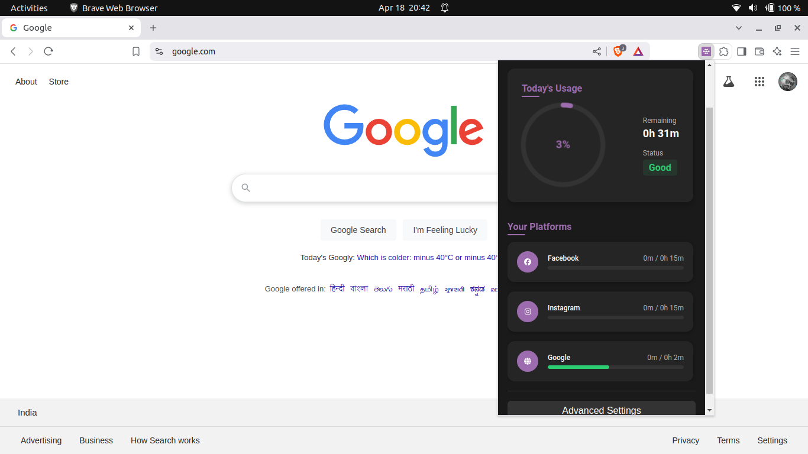
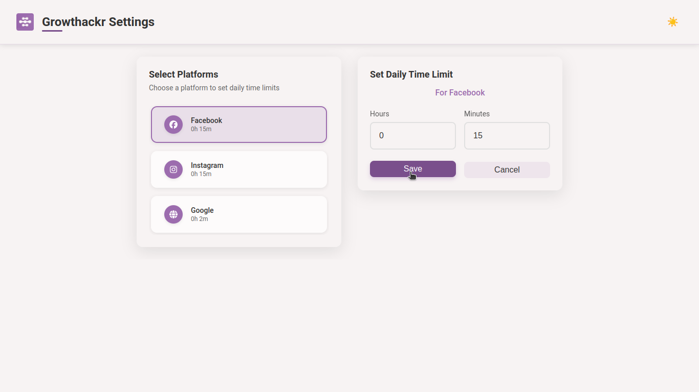
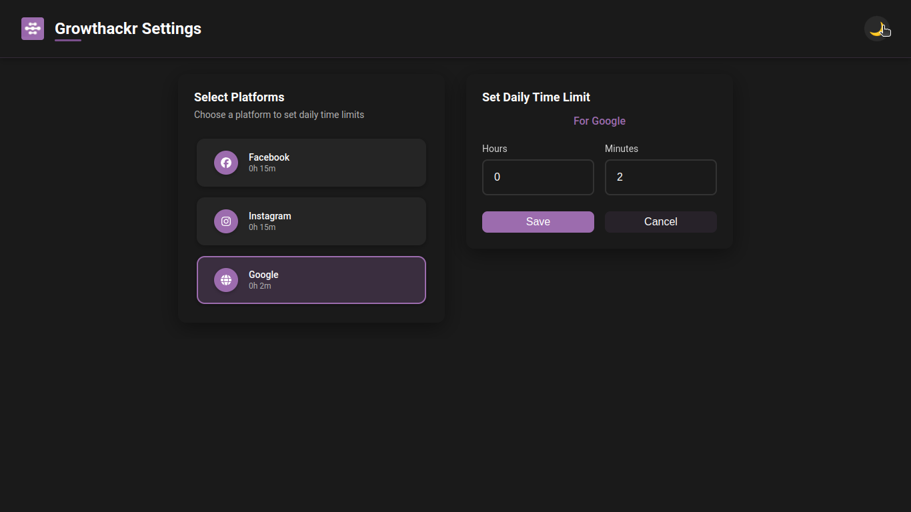
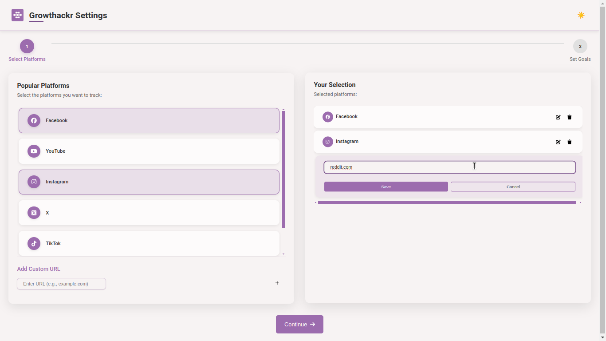
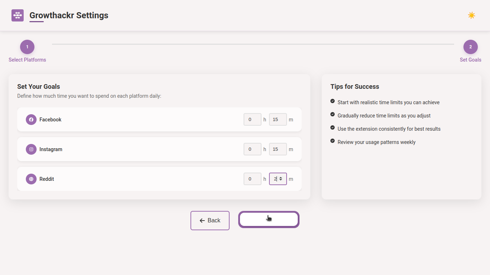
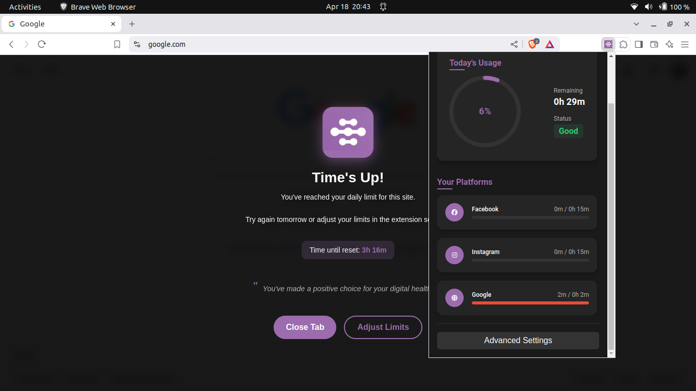

Growthackr Chrome Extension - v1.0.0
Growthackr


Track. Limit. Grow.
Build on KISS principle.
Growthackr helps you reclaim control of your time online by monitoring and limiting your usage on platforms like Facebook, YouTube, and Instagram — all from a clean, intuitive Chrome extension.
📦 Usage
- Click the Growthackr icon in your browser
- Scroll down and click
Advanced Settings - Set time limits for each platform
- Use your browser — Growthackr runs silently in the background
- You can check usage from dashboard
- Platforms will be blocked when your time is up
📸 Preview & Demo
Demo and installation

Dashboard (Dark Mode)

Options Page (Light & Dark)


Welcome Flow (Light Theme)


Blocking Screen

🚀 Installation
Option 1: Manual Install from GitHub Release
- Go to the Releases tab.
- Download the latest
Growthackr.zipfile. - Extract the ZIP to a folder.
- Open Chrome and go to
chrome://extensions/ - Enable Developer Mode (toggle switch in the top right).
- Click "Load unpacked" and select the extracted folder.
Follow demo after extracting zip
Option 2: Chrome Web Store
If got enough users or stars, I may release it to chrome web store
🧠 Features
- ⏳ Time Tracking – Monitor daily usage for supported platforms or add you custom url
- ⚙️ Custom Limits – Set your own daily screen time goals for each platform
- 🎨 Theme Support – Choose between Light and Dark themes to match your style
- 💎 Simple UI – Clean, distraction-free interface
📦 Usage
- Click the Growthackr icon in your browser
- Scroll down and click
Advanced Settings - Set time limits for each platform
- Use your browser — Growthackr runs silently in the background
- You can check usage from dashboard
- Platforms will be blocked when your time is up
📚 Documentation
Looking to dive deeper into the codebase, understand architecture, or contribute?
Check out the full developer documentation here:
👉 https://nikhil0verma.github.io/Growthackr/
👨💻 Development Setup
1. Clone the Repository```bash
git clone https://github.com/NIKHIL0VERMA/Growthackr.git cd Growthackr
### 2. Install Dependencies
```bash
npm install
3. Build the Project
npm run build
4. Load in Chrome
- Go to
chrome://extensions/ - Enable Developer Mode
- Click Load Unpacked
- Select the
dist/folder
🧪 Tech Stack


🤝 Contributing
We welcome contributions!
How to Contribute
- Fork the repo
- Create a new branch (
git checkout -b your-feature) - Make changes and commit (
git commit -m "Add feature") - Push your branch and open a Pull Request
Guidelines
- Match the existing style
- Write tests where applicable
- Update docs when needed
🌱 Roadmap
- Add advance analytics dashboard
- Mobile companion app
- Sync settings across devices
- Smart, AI-powered limit suggestions
📄 License
This project is licensed under the MIT License.
📬 Contact
Author: Nikhil Verma
Found a bug or have feedback? Open an issue or reach out!